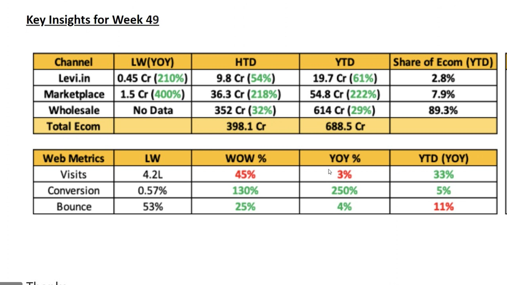

Tableau Administration & Migration
Tableau Server & Cloud administration across DEV/QA/PROD, large-scale content migrations using TCMT, permission governance, and Row-Level Security implementation.
Tableau & Power BI Specialist · Enterprise BI Administration & Migration
6+ years specializing in Business Intelligence and Analytics across the Banking and Marketing domains. I focus on Tableau Server & Cloud administration, large-scale content migrations with TCMT, Power BI development, and dimensional data modelling — delivering enterprise BI solutions with high reliability and minimal downtime.

Tableau Server & Cloud administration across DEV/QA/PROD, large-scale content migrations using TCMT, permission governance, and Row-Level Security implementation.
End-to-end dashboard development with DAX, Power Query (M), Power BI Service & Gateway management, and automated reporting for stakeholders.
Star & Snowflake schema design, fact and dimension tables, and data models optimized for performance, quality, and business-driven reporting.
LOD expressions, action filters, parameters, and trend analysis — brought to life through Donut, Waterfall, Pareto, Butterfly, and KPI-driven dashboards.

Ernst & Young · Tableau Desktop
Built dashboards covering Old vs. New Merchandise, Finance Cash Flow, Monthly Performance, Sales, Product, and Category — consolidating data from Adobe Analytics, Wholesale, Levi's Site, and E‑commerce.

Ernst & Young · Tableau Desktop
Published recurring Sales, Category, and Product performance reports tracking LW/YoY, HTD, YTD, and web metrics for management review.

Velocis Systems · Client: NIC, Government of India · Power BI
Conceptualized exploratory dashboards for vehicle registration, driving licences, and e‑Challan revenue, with Row‑Level Security for secure reporting.
Freelance | April 2026 – Present
Ernst & Young (EY) · Client: Levi's | November 2022 – December 2023
Associate Consultant, Ernst & Young (EY) | May 2021 – October 2022
Associate Consultant, Ernst & Young (EY) | August 2021 – December 2021
Environment: Power Apps, Canvas App, Power Automate, Power Query, Power BI
Data Analyst, Velocis Systems Pvt. Ltd. · Client: NIC, Government of India | August 2018 – April 2021